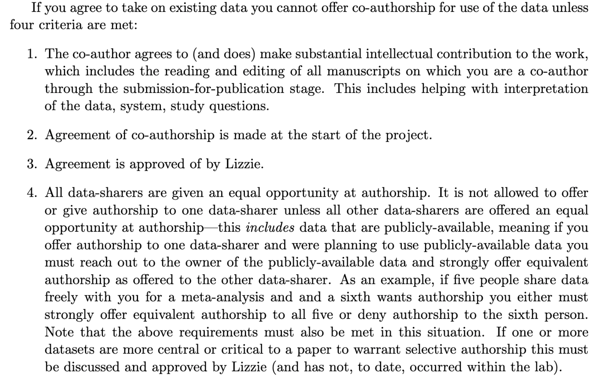

11.1 Developing a Code of Conduct
Whether you are joining a lab group or establishing a new collaboration, articulating a set of shared agreements about how people in the group will treat each other will help create the conditions for successful collaboration. If agreements or a code of conduct do not yet exist, invite a conversation among all members to create them. Co-creation of a code of conduct will foster collaboration and engagement as a process in and of itself, and is important to ensure all voices heard such that your code of conduct represents the perspectives of your community. If a code of conduct already exists, and your community will be a long-acting collaboration, you might consider revising the code of conduct. Having your group ‘sign off’ on the code of conduct, whether revised or not, supports adoption of the principles.
For example, the Openscapes code of conduct includes
- Be respectful
- Be direct but professional
- Be inclusive
- Understand different perspectives
- Appreciate and Accommodate Our Similarities and Differences
- Lead by Example
Understand Different Perspectives
Our goal should not be to “win” every disagreement or argument. A more productive goal is to be open to ideas that make our own ideas better. Strive to be an example for inclusive thinking. “Winning” is when different perspectives make our work richer and stronger. (openscapes.org)
Below are other example codes of conduct:
11.2 Authorship and Credit Policies

Navigating issues of intellectual property and credit can be a challenge, particularly for early career researchers. Open communication is critical to avoiding misunderstandings and conflicts. Talk to your coauthors and collaborators about authorship, credit, and data sharing early and often. This is particularly important when working with new collaborators and across lab groups or disciplines which may have divergent views on authorship and data sharing. If you feel uncomfortable talking about issues surrounding credit or intellectual property, seek the advice or assistance of a mentor to support you in having these important conversations.
The “Publication” section of the Ecological Society of America’s Code of Ethics is a useful starting point for discussions about co-authorship, as are the International Committee of Medical Journal Editors guidelines for authorship and contribution. You should also check guidelines published by the journal(s) to which you anticipate submitting your work.
For collaborative research projects, develop an authorship agreement for your group early in the project and refer to it for each product. This example authorship agreement from the Arctic Data Center provides a useful template. It builds from information contained within Weltzin et al (2006) and provides a rubric for inclusion of individuals as authors. Your collaborative team may not choose to adopt the agreement in the current form, however it will prompt thought and discussion in advance of developing a consensus. Some key questions to consider as you are working with your team to develop the agreement:
What roles do we anticipate contributors will play? e.g., the NISO Contributor Roles Taxonomy (CRediT) identifies 14 distinct roles:
- Conceptualization
- Data curation
- Formal Analysis
- Funding acquisition
- Investigation
- Methodology
- Project administration
- Resources
- Software
- Supervision
- Validation
- Visualization
- Writing – original draft
- Writing – review & editing
What are our criteria for authorship? (See the ICMJE guidelines for potential criteria)
Will we extend the opportunity for authorship to all group members on every paper or product?
Do we want to have an opt in or opt out policy? (In an opt out policy, all group members are considered authors from the outset and must request removal from the paper if they don’t want think they meet the criteria for authorship)
Who has the authority to make decisions about authorship? Lead author? PI? Group?
How will we decide authorship order?
In what other ways will we acknowledge contributions and extend credit to collaborators?
How will we resolve conflicts if they arise?
11.3 Data Sharing and Reuse Policies
As with authorship agreements, it is valuable to establish a shared agreement around handling of data when embarking on collaborative projects. Data collected as part of a funded research activity will typically have been managed as part of the Data Management Plan (DMP) associated with that project. However, collaborative research brings together data from across research projects with different data management plans and can include publicly accessible data from repositories where no management plan is available. For these reasons, a discussion and agreement around the handling of data brought into and resulting from the collaboration is warranted and management of this new data may benefit from going through a data management planning process. Below we discuss example data agreements.
The example data policy template provided by the Arctic Data Center addresses three categories of data.
- Individual data not in the public domain
- Individual data with public access
- Derived data resulting from the project
For the first category, the agreement considers conditions under which those data may be used and permissions associated with use. It also addresses access and sharing. In the case of individual, publicly accessible data, the agreement stipulates that the team will abide by the attribution and usage policies that the data were published under, noting how those requirements we met. In the case of derived data, the agreement reads similar to a DMP with consideration of making the data public; management, documentation and archiving; pre-publication sharing; and public sharing and attribution. As research data objects receive a persistent identifier (PID), often a DOI, there are citable objects and consideration should be given to authorship of data, as with articles.
The following example lab policy from the Wolkovich Lab combines data management practices with authorship guidelines and data sharing agreements. It provides a lot of detail about how this lab approaches data use, attribution and authorship.
Below an example from Wolkovich’s Lab Data Management Policies, Section 6: Co-authorship & data.

Data Management Policies for the Wolkovich Lab - Preview
This policy is communicated with all incoming lab members, from undergraduate to postdocs and visiting scholars, and is shared here with permission from Dr Elizabeth Wolkovich.
11.4 Slide Deck
11.5 The FAIR and CARE Principles

The idea behind these principles is to increase access and usage of complex and large datasets for innovation, discovery, and decision-making. This means making data available to machines, researchers, Indigenous communities, policy makers, and more.
With the need to improve the infrastructure supporting the reuse of data, a group of diverse stakeholders from academia, funding agencies, publishers and industry came together to jointly endorse measurable guidelines that enhance the reusability of data (Wilkinson et al. (2016)). These guidelines became what we now know as the FAIR Data Principles.
Following the discussion about FAIR and incorporating activities and feedback from the Indigenous Data Sovereignty network, the Global Indigenous Data Alliance developed the CARE principles (Carroll et al. (2021)). The CARE principles for Indigenous Data Governance complement the more data-centric approach of the FAIR principles, introducing social responsibility to open data management practices.
Together, these two principle encourage us to push open and other data movements to consider both people and purpose in their advocacy and pursuits. The goal is that researchers, stewards, and any users of data will be FAIR and CARE (Carroll et al. (2020)).
11.5.1 What is FAIR?
With the rise of open science and more accessible data, it is becoming increasingly important to address accessibility and openness in multiple ways. The FAIR principles focuses on how to prepare your data so that it can be reused by others (versus just open access of research outputs). In 2016, the data stewardship community published principles surrounding best practices for open data management, including FAIR. FAIR stands for Findable, Accessible, Interoperable, and Reproducible. It is best to think about FAIR as a set of comprehensive standards for you to use while curating your data. And each principle of FAIR can be translated into a set of actions you can take during the entire lifecycle of research data management.
| FAIR | Definition |
|---|---|
| (F) Findable | Metadata and data should be easy to find for both humans and computers. |
| (A) Accessible | Once someone finds the required data, they need to know how the data can be accessed. |
| (I) Interoperable | The data needs to be easily integrated with other data for analysis, storage, and processing. |
| (R) Reusable | Data should be well-described so they can be reused and replicated in different settings. |
11.5.2 FAIR Principles in Practice
This is not an exhaustive list of actions for applying FAIR Principles to your research, but these are important big picture concepts you should always keep in mind. We’ll be going through the resources linked below so that you know how to use them in your own work.
- It’s all about the metadata. To make your data and research as findable and as accessible as possible, it’s crucial that you are providing rich metadata. This includes, using a field-specific metadata standard (i.e. EML or Ecological Metadata Language for earth and environmental sciences), adding a globally unique identifier (i.e. a Digital Object Identifier) to your datasets, and more. As discussed earlier, quality metadata goes a long way in making your data FAIR. One tool to help implement FAIR principles to non-FAIR data is the FAIRification process. This workflow was developed by GoFAIR, a self-governed initiative that aims to help implement the FAIR data principles.
- Assess the FAIRness of your research. The FAIR Principles are a lens to apply to your work. And it’s important to ask yourself questions about finding and accessing your data, about how machine-readable your datasets and metadata are, and how reusable it is throughout the entirety of your project. This means you should be re-evaluating the FAIRness of your work over and over again. One way to check the FAIRness of your work, is to use tools like FAIR-Aware and the FAIR Data Maturity Model. These tools are self-assessments and can be thought of as a checklists for FAIR and will provide guidance if you’re missing anything.
- Make FAIR decisions during the planning process. You can ensure FAIR Principles are going to implemented in your work by thinking about it and making FAIR decisions early on and throughout the data life cycle. As you document your data always keep in mind the FAIR lense.
11.5.3 What is CARE?
The CARE Principles for Indigenous Data Governance were developed by the International Indigenous Data Sovereignty Interest Group in consultation with Indigenous Peoples, scholars, non-profit organizations, and governments (Carroll et al. (2020)). They address concerns related to the people and purpose of data. It advocates for greater Indigenous control and oversight in order to share data on Indigenous Peoples’ terms. These principles are people and purpose-oriented, reflecting the crucial role data have in advancing Indigenous innovation and self-determination. CARE stands for Collective benefits, Authority control, Responsibility and Ethics. It details that the use of Indigenous data should result in tangible benefits for Indigenous collectives through inclusive development and innovation, improved governance and citizen engagement, and result in equitable outcomes.

| CARE | Definition |
|---|---|
| (C) Collective Benefit | Data ecosystems shall be designed and function in ways that enable Indigenous Peoples to derive benefit from the data. |
| (A) Authority to Control | Indigenous Peoples’ rights and interests in Indigenous data must be recognized and their authority to control such data be empowered. Indigenous data governance enables Indigenous Peoples and governing bodies to determine how Indigenous Peoples, as well as Indigenous lands, territories, resources, knowledge and geographical indicators, are represented and identified within data. |
| (R) Responsibility | Those working with Indigenous data have a responsibility to share how those data are used to support Indigenous Peoples’ self-determination and collective benefit. Accountability requires meaningful and openly available evidence of these efforts and the benefits accruing to Indigenous Peoples. |
| (E) Ethics | Indigenous Peoples’ rights and well being should be the primary concern at all stages of the data life cycle and across the data ecosystem. |
11.5.4 CARE Principles in Practice
Make your data access to Indigenous groups. Much of the CARE Principles are about sharing and making data accessible to Indigenous Peoples. To do so, consider publish your data on Indigenous founded data repositories such as:
Use Traditional Knowledge (TK) and Biocultural (BC) Labels How do we think of intellectual property for Traditional and Biocultural Knowledge? Knowledge that outdates any intellectual property system. In many cases institution, organizations, outsiders hold the copy rights of this knowledge and data that comes from their lands, territories, waters and traditions. Traditional Knowledge and Biocultural Labels are digital tags that establish Indigenous cultural authority and governance over Indigenous data and collections by adding provenance information and contextual metadata (including community names), protocols, and permissions for access, use, and circulation. This way mark cultural authority so is recorded in a way that recognizes the inherent sovereignty that Indigenous communities have over knowledge. Giving Indigenous groups more control over their cultural material and guide users what an appropriate behavior looks like. A global initiative that support Indigenous communities with tools that attribute their cultural heritage is Local Contexts.
Assess the CAREness of your research. Like FAIR, CARE Principles are a lens to apply to your work. With CARE, it’s important to center human well-being in addition to open science and data sharing. To do this, reflect on how you’re giving access to Indigenous groups, on who your data impacts and the relationships you have with them, and the ethical concerns in your work. The Arctic Data Center, a data repository for Arctic research, now requires an Ethical Research Practices Statement when submitting data to them. They also have multiple guidelines on how to write and what to include in an Ethical Research Practices Statement.
11.6 Research Data Publishing Ethics
For over 20 years, the Committee on Publication Ethics (COPE) has provided trusted guidance on ethical practices for scholarly publishing. The COPE guidelines have been broadly adopted by academic publishers across disciplines, and represent a common approach to identify, classify, and adjudicate potential breaches of ethics in publication such as authorship conflicts, peer review manipulation, and falsified findings, among many other areas. Despite these guidelines, there has been a lack of ethics standards, guidelines, or recommendations for data publications, even while some groups have begun to evaluate and act upon reported issues in data publication ethics.

To address this gap, the Force 11 Working Group on Research Data Publishing Ethics was formed as a collaboration among research data professionals and the Committee on Publication Ethics (COPE) “to develop industry-leading guidance and recommended best practices to support repositories, journal publishers, and institutions in handling the ethical responsibilities associated with publishing research data.” The group released the “Joint FORCE11 & COPE Research Data Publishing Ethics Working Group Recommendations” (Puebla, Lowenberg, and WG 2021), which outlines recommendations for four categories of potential data ethics issues:
- Authorship and Contribution Conflicts
- Authorship omissions
- Authorship ordering changes / conflicts
- Institutional investigation of author finds misconduct
- Legal/regulatory restrictions
- Copyright violation
- Insufficient rights for deposit
- Breaches of national privacy laws (GPDR, CCPA)
- Breaches of biosafety and biosecurity protocols
- Breaches of contract law governing data redistribution
- Risks of publication or release
- Risks to human subjects
- Lack of consent
- Breaches of himan rights
- Release of personally identifiable information (PII)
- Risks to species, ecosystems, historical sites
- Locations of endangered species or historical sites
- Risks to communities or societies
- Data harvested for profit or surveillance
- Breaches of data sovereignty
- Risks to human subjects
- Rigor of published data
- Unintentional errors in collection, calculation, display
- Un-interpretable data due to lack of adequate documentation
- Errors of of study design and inference
- Data manipulation or fabrication
Guidelines cover what actions need to be taken, depending on whether the data are already published or not, as well as who should be involved in decisions, who should be notified of actions, and when the public should be notified. The group has also published templates for use by publishers and repositories to announce the extent to which they plan to conform to the data ethics guidelines.

11.7 Group Discussion
Consider the following hypothetical scenario:
The data coordinator at the Arctic Data Center receives an email in 2022 from a prior postdoctoral fellow who was employed as part of an NSF-funded project on microbial diversity in Alaskan tundra ecosystems. The email states that a dataset from 2014 in the Arctic Data Center was published with the project PI as author, but omits two people, the postdoc and an undergraduate student, as co-authors on the dataset. The PI retired in 2019, and the postdoc asks that they be added to the author list of the dataset to correct the historical record and provide credit.
At the Arctic Data Center, we need to develop policies and procedures governing how we react to potential breaches of data publication ethics. This exercise, aims to instigate a group discussion on how the Arctic Data Center should respond to reports of data ethics issues, and whether we should adopt the Joint FORCE11 & COPE Research Data Publishing Ethics Working Group Policy Templates for repositories.
- Guiding questions:
- Should the repository adopt the repository policy templates from Force11?
- Who should be involved in evaluation of the merits of ethical cases reported to ADC?
- Who should be involved in deciding the actions to take?
- What are the range of responses that the repository should consider for ethical breaches?
- Who should be notified when a determination has been made that a breach has occurred?
Consider the hypothetical scenario described above to for your response.